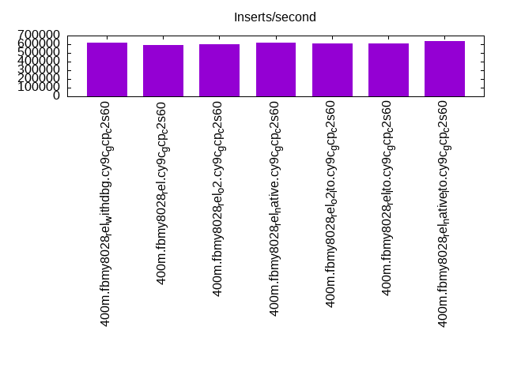
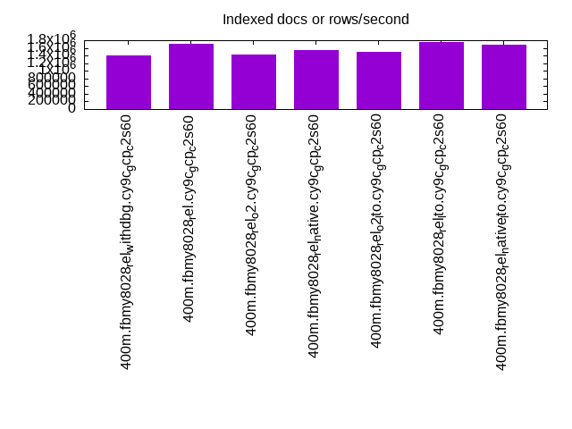
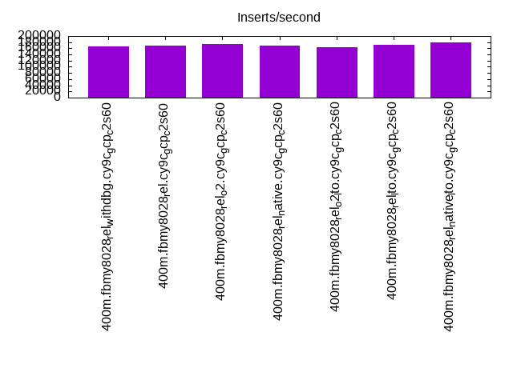
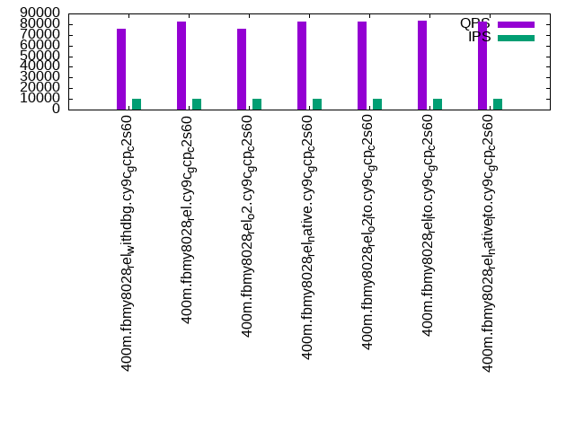
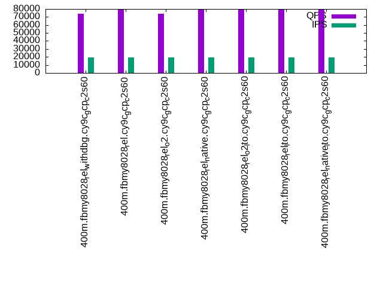

This is a report for the insert benchmark with 400M docs and 20 client(s). It is generated by scripts (bash, awk, sed) and Tufte might not be impressed. An overview of the insert benchmark is here and a short update is here. Below, by DBMS, I mean DBMS+version.config. An example is my8020.c10b40 where my means MySQL, 8020 is version 8.0.20 and c10b40 is the name for the configuration file.
The test server is c2-standard-60 from GCP with 30 cores, hyperthreading disabled, 240G RAM and 3T of NVMe storage. The benchmark was run with 20 clients and there were 1 or 2 connections per client (1 for queries, 1 for inserts). The benchmark loads 400M rows without secondary indexes, creates secondary indexes, loads another 400M rows then does 3 read+write tests for 1800 seconds each that do queries as fast as possible with 100, 500 and then 1000 writes/second/client concurrent with the queries. There was 1 table per client. The database is cached by the storage engine and the only IO is for writes. Clients and the DBMS share one server. The per-database configs are in the per-database subdirectories here.
The tested DBMS are:
The numbers are inserts/s for l.i0 and l.i1, indexed docs (or rows) /s for l.x and queries/s for q*.2. The values are the average rate over the entire test for inserts (IPS) and queries (QPS). The range of values for IPS and QPS is split into 3 parts: bottom 25%, middle 50%, top 25%. Values in the bottom 25% have a red background, values in the top 25% have a green background and values in the middle have no color. A gray background is used for values that can be ignored because the DBMS did not sustain the target insert rate. Red backgrounds are not used when the minimum value is within 80% of the max value.
| dbms | l.i0 | l.x | l.i1 | q100.1 | q500.1 | q1000.1 |
|---|---|---|---|---|---|---|
| 400m.fbmy8028_rel_withdbg.cy9c_gcp_c2s60 | 615385 | 1398951 | 167154 | 77048 | 76096 | 73869 |
| 400m.fbmy8028_rel.cy9c_gcp_c2s60 | 589970 | 1717167 | 168776 | 83164 | 82280 | 79192 |
| 400m.fbmy8028_rel_o2.cy9c_gcp_c2s60 | 602410 | 1428928 | 174140 | 77010 | 75774 | 73711 |
| 400m.fbmy8028_rel_native.cy9c_gcp_c2s60 | 619195 | 1532950 | 169924 | 82911 | 82265 | 79189 |
| 400m.fbmy8028_rel_o2_lto.cy9c_gcp_c2s60 | 608828 | 1504135 | 162536 | 83547 | 82600 | 79602 |
| 400m.fbmy8028_rel_lto.cy9c_gcp_c2s60 | 613497 | 1762555 | 171013 | 83632 | 82851 | 79913 |
| 400m.fbmy8028_rel_native_lto.cy9c_gcp_c2s60 | 632911 | 1688186 | 180424 | 82640 | 82027 | 79462 |
This table has relative throughput, throughput for the DBMS relative to the DBMS in the first line, using the absolute throughput from the previous table.
| dbms | l.i0 | l.x | l.i1 | q100.1 | q500.1 | q1000.1 |
|---|---|---|---|---|---|---|
| 400m.fbmy8028_rel_withdbg.cy9c_gcp_c2s60 | 1.00 | 1.00 | 1.00 | 1.00 | 1.00 | 1.00 |
| 400m.fbmy8028_rel.cy9c_gcp_c2s60 | 0.96 | 1.23 | 1.01 | 1.08 | 1.08 | 1.07 |
| 400m.fbmy8028_rel_o2.cy9c_gcp_c2s60 | 0.98 | 1.02 | 1.04 | 1.00 | 1.00 | 1.00 |
| 400m.fbmy8028_rel_native.cy9c_gcp_c2s60 | 1.01 | 1.10 | 1.02 | 1.08 | 1.08 | 1.07 |
| 400m.fbmy8028_rel_o2_lto.cy9c_gcp_c2s60 | 0.99 | 1.08 | 0.97 | 1.08 | 1.09 | 1.08 |
| 400m.fbmy8028_rel_lto.cy9c_gcp_c2s60 | 1.00 | 1.26 | 1.02 | 1.09 | 1.09 | 1.08 |
| 400m.fbmy8028_rel_native_lto.cy9c_gcp_c2s60 | 1.03 | 1.21 | 1.08 | 1.07 | 1.08 | 1.08 |
This lists the average rate of inserts/s for the tests that do inserts concurrent with queries. For such tests the query rate is listed in the table above. The read+write tests are setup so that the insert rate should match the target rate every second. Cells that are not at least 95% of the target have a red background to indicate a failure to satisfy the target.
| dbms | q100.1 | q500.1 | q1000.1 |
|---|---|---|---|
| fbmy8028_rel_withdbg.cy9c_gcp_c2s60 | 1977 | 9879 | 19769 |
| fbmy8028_rel.cy9c_gcp_c2s60 | 1976 | 9879 | 19769 |
| fbmy8028_rel_o2.cy9c_gcp_c2s60 | 1976 | 9879 | 19769 |
| fbmy8028_rel_native.cy9c_gcp_c2s60 | 1976 | 9879 | 19769 |
| fbmy8028_rel_o2_lto.cy9c_gcp_c2s60 | 1976 | 9879 | 19769 |
| fbmy8028_rel_lto.cy9c_gcp_c2s60 | 1976 | 9879 | 19769 |
| fbmy8028_rel_native_lto.cy9c_gcp_c2s60 | 1976 | 9879 | 19769 |
| target | 2000 | 10000 | 20000 |
l.i0: load without secondary indexes. Graphs for performance per 1-second interval are here.
Average throughput:
Insert response time histogram: each cell has the percentage of responses that take <= the time in the header and max is the max response time in seconds. For the max column values in the top 25% of the range have a red background and in the bottom 25% of the range have a green background. The red background is not used when the min value is within 80% of the max value.
| dbms | 256us | 1ms | 4ms | 16ms | 64ms | 256ms | 1s | 4s | 16s | gt | max |
|---|---|---|---|---|---|---|---|---|---|---|---|
| fbmy8028_rel_withdbg.cy9c_gcp_c2s60 | 0.325 | 93.782 | 5.819 | 0.032 | 0.038 | 0.003 | 0.340 | ||||
| fbmy8028_rel.cy9c_gcp_c2s60 | 0.465 | 87.859 | 11.597 | 0.034 | 0.043 | 0.002 | 0.532 | ||||
| fbmy8028_rel_o2.cy9c_gcp_c2s60 | 0.294 | 91.871 | 7.755 | 0.033 | 0.043 | 0.003 | 0.282 | ||||
| fbmy8028_rel_native.cy9c_gcp_c2s60 | 0.513 | 92.009 | 7.407 | 0.026 | 0.042 | 0.002 | 0.380 | ||||
| fbmy8028_rel_o2_lto.cy9c_gcp_c2s60 | 0.394 | 91.155 | 8.378 | 0.030 | 0.042 | 0.002 | 0.346 | ||||
| fbmy8028_rel_lto.cy9c_gcp_c2s60 | 1.199 | 90.901 | 7.817 | 0.038 | 0.044 | 0.001 | 0.285 | ||||
| fbmy8028_rel_native_lto.cy9c_gcp_c2s60 | 0.529 | 93.214 | 6.183 | 0.032 | 0.037 | 0.004 | 0.376 |
Performance metrics for the DBMS listed above. Some are normalized by throughput, others are not. Legend for results is here.
ips qps rps rmbps wps wmbps rpq rkbpq wpi wkbpi csps cpups cspq cpupq dbgb1 dbgb2 rss maxop p50 p99 tag 615385 0 0 0.0 594.3 139.8 0.000 0.000 0.001 0.233 480559 63.6 0.781 31 12.8 13.3 3.8 0.340 31665 18180 400m.fbmy8028_rel_withdbg.cy9c_gcp_c2s60 589970 0 0 0.0 628.7 147.9 0.000 0.000 0.001 0.257 496913 64.7 0.842 33 12.9 13.5 4.0 0.532 29967 14691 400m.fbmy8028_rel.cy9c_gcp_c2s60 602410 0 0 0.0 638.9 149.4 0.000 0.000 0.001 0.254 498691 64.8 0.828 32 12.7 13.3 3.9 0.282 30567 19878 400m.fbmy8028_rel_o2.cy9c_gcp_c2s60 619195 0 0 0.0 625.4 144.4 0.000 0.000 0.001 0.239 491979 63.6 0.795 31 12.8 13.3 3.8 0.380 31077 19978 400m.fbmy8028_rel_native.cy9c_gcp_c2s60 608828 0 0 0.0 630.5 146.1 0.000 0.000 0.001 0.246 480143 64.0 0.789 32 12.6 13.2 3.9 0.346 31366 19479 400m.fbmy8028_rel_o2_lto.cy9c_gcp_c2s60 613497 0 0 0.0 640.8 149.0 0.000 0.000 0.001 0.249 507022 63.8 0.826 31 12.8 13.3 3.9 0.285 29977 18783 400m.fbmy8028_rel_lto.cy9c_gcp_c2s60 632911 0 0 0.0 634.5 147.7 0.000 0.000 0.001 0.239 458866 63.3 0.725 30 12.6 13.2 3.8 0.376 32565 15983 400m.fbmy8028_rel_native_lto.cy9c_gcp_c2s60
l.x: create secondary indexes.
Average throughput:
Performance metrics for the DBMS listed above. Some are normalized by throughput, others are not. Legend for results is here.
ips qps rps rmbps wps wmbps rpq rkbpq wpi wkbpi csps cpups cspq cpupq dbgb1 dbgb2 rss maxop p50 p99 tag 1398951 0 2 0.2 515.4 151.2 0.000 0.000 0.000 0.111 5278 56.1 0.004 12 27.0 27.5 26.1 0.003 NA NA 400m.fbmy8028_rel_withdbg.cy9c_gcp_c2s60 1717167 0 3 0.2 635.0 186.6 0.000 0.000 0.000 0.111 6244 58.3 0.004 10 27.0 27.6 26.7 0.048 NA NA 400m.fbmy8028_rel.cy9c_gcp_c2s60 1428928 0 3 0.2 536.2 146.1 0.000 0.000 0.000 0.105 5526 57.7 0.004 12 27.0 27.5 26.3 0.005 NA NA 400m.fbmy8028_rel_o2.cy9c_gcp_c2s60 1532950 0 3 0.2 562.8 159.0 0.000 0.000 0.000 0.106 5721 53.0 0.004 10 27.0 27.5 26.2 0.007 NA NA 400m.fbmy8028_rel_native.cy9c_gcp_c2s60 1504135 0 3 0.2 561.9 156.8 0.000 0.000 0.000 0.107 5610 57.5 0.004 11 26.9 27.5 26.7 0.003 NA NA 400m.fbmy8028_rel_o2_lto.cy9c_gcp_c2s60 1762555 0 3 0.3 653.3 190.3 0.000 0.000 0.000 0.111 6544 57.7 0.004 10 27.0 27.6 26.5 0.005 NA NA 400m.fbmy8028_rel_lto.cy9c_gcp_c2s60 1688186 0 3 0.2 628.7 175.6 0.000 0.000 0.000 0.107 6271 55.9 0.004 10 26.9 27.5 26.2 0.004 NA NA 400m.fbmy8028_rel_native_lto.cy9c_gcp_c2s60
l.i1: continue load after secondary indexes created. Graphs for performance per 1-second interval are here.
Average throughput:
Insert response time histogram: each cell has the percentage of responses that take <= the time in the header and max is the max response time in seconds. For the max column values in the top 25% of the range have a red background and in the bottom 25% of the range have a green background. The red background is not used when the min value is within 80% of the max value.
| dbms | 256us | 1ms | 4ms | 16ms | 64ms | 256ms | 1s | 4s | 16s | gt | max |
|---|---|---|---|---|---|---|---|---|---|---|---|
| fbmy8028_rel_withdbg.cy9c_gcp_c2s60 | 0.010 | 10.604 | 88.961 | 0.292 | 0.096 | 0.037 | 0.499 | ||||
| fbmy8028_rel.cy9c_gcp_c2s60 | 0.008 | 10.408 | 88.896 | 0.540 | 0.144 | 0.003 | 0.413 | ||||
| fbmy8028_rel_o2.cy9c_gcp_c2s60 | 0.009 | 10.334 | 89.594 | 0.039 | 0.021 | 0.002 | 0.379 | ||||
| fbmy8028_rel_native.cy9c_gcp_c2s60 | 0.010 | 10.169 | 89.296 | 0.499 | 0.024 | 0.002 | 0.539 | ||||
| fbmy8028_rel_o2_lto.cy9c_gcp_c2s60 | 0.024 | 10.634 | 88.348 | 0.837 | 0.141 | 0.016 | 0.473 | ||||
| fbmy8028_rel_lto.cy9c_gcp_c2s60 | 0.050 | 12.097 | 87.318 | 0.384 | 0.139 | 0.012 | 0.423 | ||||
| fbmy8028_rel_native_lto.cy9c_gcp_c2s60 | 0.052 | 12.570 | 87.109 | 0.245 | 0.022 | 0.002 | 0.397 |
Performance metrics for the DBMS listed above. Some are normalized by throughput, others are not. Legend for results is here.
ips qps rps rmbps wps wmbps rpq rkbpq wpi wkbpi csps cpups cspq cpupq dbgb1 dbgb2 rss maxop p50 p99 tag 167154 0 14 3.7 546.8 132.8 0.000 0.023 0.003 0.814 186314 36.3 1.115 65 59.6 61.3 43.5 0.499 8843 150 400m.fbmy8028_rel_withdbg.cy9c_gcp_c2s60 168776 0 14 3.7 535.8 132.2 0.000 0.023 0.003 0.802 202492 37.6 1.200 67 58.9 60.6 43.5 0.413 8940 350 400m.fbmy8028_rel.cy9c_gcp_c2s60 174140 0 14 4.0 596.6 142.5 0.000 0.024 0.003 0.838 158770 36.8 0.912 63 62.9 64.6 44.1 0.379 8743 6842 400m.fbmy8028_rel_o2.cy9c_gcp_c2s60 169924 0 14 3.8 556.5 137.6 0.000 0.023 0.003 0.829 179776 36.6 1.058 65 74.6 76.3 43.8 0.539 8741 2298 400m.fbmy8028_rel_native.cy9c_gcp_c2s60 162536 0 13 3.7 522.2 124.7 0.000 0.023 0.003 0.786 198491 36.0 1.221 66 62.3 64.0 43.7 0.473 8740 200 400m.fbmy8028_rel_o2_lto.cy9c_gcp_c2s60 171013 0 14 3.8 561.2 134.6 0.000 0.023 0.003 0.806 205961 36.9 1.204 65 63.6 65.3 43.8 0.423 8990 300 400m.fbmy8028_rel_lto.cy9c_gcp_c2s60 180424 0 15 4.0 612.2 149.7 0.000 0.023 0.003 0.849 171260 37.4 0.949 62 63.2 64.9 43.7 0.397 9140 3996 400m.fbmy8028_rel_native_lto.cy9c_gcp_c2s60
q100.1: range queries with 100 insert/s per client. Graphs for performance per 1-second interval are here.
Average throughput:
Query response time histogram: each cell has the percentage of responses that take <= the time in the header and max is the max response time in seconds. For max values in the top 25% of the range have a red background and in the bottom 25% of the range have a green background. The red background is not used when the min value is within 80% of the max value.
| dbms | 256us | 1ms | 4ms | 16ms | 64ms | 256ms | 1s | 4s | 16s | gt | max |
|---|---|---|---|---|---|---|---|---|---|---|---|
| fbmy8028_rel_withdbg.cy9c_gcp_c2s60 | 66.658 | 33.332 | 0.007 | 0.001 | 0.001 | 0.038 | |||||
| fbmy8028_rel.cy9c_gcp_c2s60 | 79.901 | 20.091 | 0.006 | 0.001 | 0.001 | 0.056 | |||||
| fbmy8028_rel_o2.cy9c_gcp_c2s60 | 66.226 | 33.764 | 0.007 | 0.001 | 0.001 | 0.043 | |||||
| fbmy8028_rel_native.cy9c_gcp_c2s60 | 79.634 | 20.359 | 0.005 | 0.001 | 0.001 | 0.050 | |||||
| fbmy8028_rel_o2_lto.cy9c_gcp_c2s60 | 80.297 | 19.696 | 0.005 | 0.001 | 0.001 | nonzero | 0.281 | ||||
| fbmy8028_rel_lto.cy9c_gcp_c2s60 | 80.764 | 19.228 | 0.005 | 0.001 | 0.001 | 0.048 | |||||
| fbmy8028_rel_native_lto.cy9c_gcp_c2s60 | 79.589 | 20.404 | 0.006 | 0.001 | 0.001 | 0.047 |
Insert response time histogram: each cell has the percentage of responses that take <= the time in the header and max is the max response time in seconds. For max values in the top 25% of the range have a red background and in the bottom 25% of the range have a green background. The red background is not used when the min value is within 80% of the max value.
| dbms | 256us | 1ms | 4ms | 16ms | 64ms | 256ms | 1s | 4s | 16s | gt | max |
|---|---|---|---|---|---|---|---|---|---|---|---|
| fbmy8028_rel_withdbg.cy9c_gcp_c2s60 | 0.040 | 99.539 | 0.397 | 0.024 | 0.036 | ||||||
| fbmy8028_rel.cy9c_gcp_c2s60 | 0.169 | 99.472 | 0.344 | 0.014 | 0.028 | ||||||
| fbmy8028_rel_o2.cy9c_gcp_c2s60 | 0.029 | 99.468 | 0.456 | 0.047 | 0.047 | ||||||
| fbmy8028_rel_native.cy9c_gcp_c2s60 | 0.068 | 99.469 | 0.440 | 0.022 | 0.045 | ||||||
| fbmy8028_rel_o2_lto.cy9c_gcp_c2s60 | 0.110 | 99.408 | 0.469 | 0.013 | 0.025 | ||||||
| fbmy8028_rel_lto.cy9c_gcp_c2s60 | 0.935 | 98.722 | 0.267 | 0.076 | 0.044 | ||||||
| fbmy8028_rel_native_lto.cy9c_gcp_c2s60 | 0.581 | 98.965 | 0.418 | 0.036 | 0.025 |
Performance metrics for the DBMS listed above. Some are normalized by throughput, others are not. Legend for results is here.
ips qps rps rmbps wps wmbps rpq rkbpq wpi wkbpi csps cpups cspq cpupq dbgb1 dbgb2 rss maxop p50 p99 tag 1977 77048 0 0.0 36.5 8.5 0.000 0.000 0.018 4.411 299301 66.5 3.885 259 56.1 58.3 92.7 0.038 3852 2957 400m.fbmy8028_rel_withdbg.cy9c_gcp_c2s60 1976 83164 0 0.0 29.7 6.6 0.000 0.000 0.015 3.415 325374 66.4 3.912 240 56.1 58.3 90.2 0.056 4187 3180 400m.fbmy8028_rel.cy9c_gcp_c2s60 1976 77010 0 0.0 43.9 11.1 0.000 0.000 0.022 5.751 295767 66.7 3.841 260 56.1 58.3 96.0 0.043 3901 3180 400m.fbmy8028_rel_o2.cy9c_gcp_c2s60 1976 82911 0 0.0 43.2 9.8 0.000 0.000 0.022 5.100 323723 66.6 3.904 241 56.1 58.3 90.2 0.050 4187 3085 400m.fbmy8028_rel_native.cy9c_gcp_c2s60 1976 83547 0 0.0 32.8 8.2 0.000 0.000 0.017 4.255 328210 66.4 3.928 238 56.1 58.3 89.2 0.281 4187 3133 400m.fbmy8028_rel_o2_lto.cy9c_gcp_c2s60 1976 83632 0 0.0 33.1 7.9 0.000 0.000 0.017 4.104 327352 66.4 3.914 238 56.1 58.3 90.0 0.048 4267 2877 400m.fbmy8028_rel_lto.cy9c_gcp_c2s60 1976 82640 0 0.0 35.8 7.9 0.000 0.000 0.018 4.109 323796 66.3 3.918 241 56.1 58.3 90.7 0.047 4173 2766 400m.fbmy8028_rel_native_lto.cy9c_gcp_c2s60
q500.1: range queries with 500 insert/s per client. Graphs for performance per 1-second interval are here.
Average throughput:
Query response time histogram: each cell has the percentage of responses that take <= the time in the header and max is the max response time in seconds. For max values in the top 25% of the range have a red background and in the bottom 25% of the range have a green background. The red background is not used when the min value is within 80% of the max value.
| dbms | 256us | 1ms | 4ms | 16ms | 64ms | 256ms | 1s | 4s | 16s | gt | max |
|---|---|---|---|---|---|---|---|---|---|---|---|
| fbmy8028_rel_withdbg.cy9c_gcp_c2s60 | 63.077 | 36.893 | 0.029 | 0.001 | nonzero | nonzero | 0.134 | ||||
| fbmy8028_rel.cy9c_gcp_c2s60 | 78.095 | 21.881 | 0.023 | 0.001 | nonzero | 0.019 | |||||
| fbmy8028_rel_o2.cy9c_gcp_c2s60 | 62.039 | 37.933 | 0.028 | 0.001 | nonzero | 0.026 | |||||
| fbmy8028_rel_native.cy9c_gcp_c2s60 | 78.127 | 21.848 | 0.025 | 0.001 | nonzero | 0.020 | |||||
| fbmy8028_rel_o2_lto.cy9c_gcp_c2s60 | 78.396 | 21.578 | 0.025 | 0.001 | nonzero | 0.046 | |||||
| fbmy8028_rel_lto.cy9c_gcp_c2s60 | 78.741 | 21.236 | 0.023 | 0.001 | nonzero | 0.023 | |||||
| fbmy8028_rel_native_lto.cy9c_gcp_c2s60 | 77.417 | 22.559 | 0.023 | 0.001 | nonzero | 0.027 |
Insert response time histogram: each cell has the percentage of responses that take <= the time in the header and max is the max response time in seconds. For max values in the top 25% of the range have a red background and in the bottom 25% of the range have a green background. The red background is not used when the min value is within 80% of the max value.
| dbms | 256us | 1ms | 4ms | 16ms | 64ms | 256ms | 1s | 4s | 16s | gt | max |
|---|---|---|---|---|---|---|---|---|---|---|---|
| fbmy8028_rel_withdbg.cy9c_gcp_c2s60 | 0.006 | 37.434 | 62.430 | 0.126 | 0.005 | 0.151 | |||||
| fbmy8028_rel.cy9c_gcp_c2s60 | 0.086 | 45.383 | 54.433 | 0.097 | 0.027 | ||||||
| fbmy8028_rel_o2.cy9c_gcp_c2s60 | 0.078 | 43.156 | 56.654 | 0.113 | 0.030 | ||||||
| fbmy8028_rel_native.cy9c_gcp_c2s60 | 0.028 | 35.439 | 64.440 | 0.094 | 0.028 | ||||||
| fbmy8028_rel_o2_lto.cy9c_gcp_c2s60 | 0.052 | 36.145 | 63.682 | 0.117 | 0.004 | 0.133 | |||||
| fbmy8028_rel_lto.cy9c_gcp_c2s60 | 0.255 | 49.960 | 49.724 | 0.062 | 0.027 | ||||||
| fbmy8028_rel_native_lto.cy9c_gcp_c2s60 | 0.101 | 47.727 | 52.070 | 0.101 | 0.031 |
Performance metrics for the DBMS listed above. Some are normalized by throughput, others are not. Legend for results is here.
ips qps rps rmbps wps wmbps rpq rkbpq wpi wkbpi csps cpups cspq cpupq dbgb1 dbgb2 rss maxop p50 p99 tag 9879 76096 0 0.0 44.4 12.5 0.000 0.000 0.004 1.298 295075 67.1 3.878 265 57.4 57.9 111.0 0.134 3820 3532 400m.fbmy8028_rel_withdbg.cy9c_gcp_c2s60 9879 82280 0 0.0 47.0 14.6 0.000 0.000 0.005 1.516 320154 67.3 3.891 245 57.4 57.9 109.9 0.019 4107 3726 400m.fbmy8028_rel.cy9c_gcp_c2s60 9879 75774 0 0.0 46.2 13.5 0.000 0.000 0.005 1.399 293234 67.2 3.870 266 57.4 57.9 115.2 0.026 3805 3502 400m.fbmy8028_rel_o2.cy9c_gcp_c2s60 9879 82265 0 0.0 46.0 13.2 0.000 0.000 0.005 1.371 319830 67.2 3.888 245 57.4 57.9 109.1 0.020 4141 3788 400m.fbmy8028_rel_native.cy9c_gcp_c2s60 9879 82600 0 0.0 46.4 13.1 0.000 0.000 0.005 1.353 322228 67.3 3.901 244 57.4 57.9 110.1 0.046 4141 3772 400m.fbmy8028_rel_o2_lto.cy9c_gcp_c2s60 9879 82851 0 0.0 45.3 12.8 0.000 0.000 0.005 1.325 321460 67.3 3.880 244 57.4 57.9 110.9 0.023 4219 3837 400m.fbmy8028_rel_lto.cy9c_gcp_c2s60 9879 82027 0 0.0 43.8 12.2 0.000 0.000 0.004 1.260 318814 67.1 3.887 245 57.3 57.8 111.9 0.027 4092 3740 400m.fbmy8028_rel_native_lto.cy9c_gcp_c2s60
q1000.1: range queries with 1000 insert/s per client. Graphs for performance per 1-second interval are here.
Average throughput:
Query response time histogram: each cell has the percentage of responses that take <= the time in the header and max is the max response time in seconds. For max values in the top 25% of the range have a red background and in the bottom 25% of the range have a green background. The red background is not used when the min value is within 80% of the max value.
| dbms | 256us | 1ms | 4ms | 16ms | 64ms | 256ms | 1s | 4s | 16s | gt | max |
|---|---|---|---|---|---|---|---|---|---|---|---|
| fbmy8028_rel_withdbg.cy9c_gcp_c2s60 | 54.569 | 45.383 | 0.048 | 0.001 | nonzero | 0.034 | |||||
| fbmy8028_rel.cy9c_gcp_c2s60 | 69.053 | 30.904 | 0.041 | 0.001 | nonzero | 0.031 | |||||
| fbmy8028_rel_o2.cy9c_gcp_c2s60 | 54.284 | 45.668 | 0.047 | 0.001 | nonzero | 0.034 | |||||
| fbmy8028_rel_native.cy9c_gcp_c2s60 | 69.178 | 30.782 | 0.040 | 0.001 | nonzero | 0.027 | |||||
| fbmy8028_rel_o2_lto.cy9c_gcp_c2s60 | 70.049 | 29.910 | 0.040 | 0.001 | nonzero | 0.026 | |||||
| fbmy8028_rel_lto.cy9c_gcp_c2s60 | 70.914 | 29.046 | 0.039 | 0.001 | nonzero | 0.045 | |||||
| fbmy8028_rel_native_lto.cy9c_gcp_c2s60 | 70.071 | 29.888 | 0.039 | 0.001 | nonzero | 0.037 |
Insert response time histogram: each cell has the percentage of responses that take <= the time in the header and max is the max response time in seconds. For max values in the top 25% of the range have a red background and in the bottom 25% of the range have a green background. The red background is not used when the min value is within 80% of the max value.
| dbms | 256us | 1ms | 4ms | 16ms | 64ms | 256ms | 1s | 4s | 16s | gt | max |
|---|---|---|---|---|---|---|---|---|---|---|---|
| fbmy8028_rel_withdbg.cy9c_gcp_c2s60 | 0.010 | 34.264 | 65.468 | 0.258 | 0.032 | ||||||
| fbmy8028_rel.cy9c_gcp_c2s60 | 0.017 | 34.193 | 65.528 | 0.263 | 0.036 | ||||||
| fbmy8028_rel_o2.cy9c_gcp_c2s60 | 0.008 | 35.562 | 64.176 | 0.253 | 0.040 | ||||||
| fbmy8028_rel_native.cy9c_gcp_c2s60 | 0.019 | 34.308 | 65.424 | 0.249 | 0.034 | ||||||
| fbmy8028_rel_o2_lto.cy9c_gcp_c2s60 | 0.042 | 36.724 | 63.027 | 0.208 | 0.036 | ||||||
| fbmy8028_rel_lto.cy9c_gcp_c2s60 | 0.102 | 36.435 | 63.272 | 0.191 | 0.044 | ||||||
| fbmy8028_rel_native_lto.cy9c_gcp_c2s60 | 0.044 | 37.714 | 62.055 | 0.185 | 0.002 | 0.089 |
Performance metrics for the DBMS listed above. Some are normalized by throughput, others are not. Legend for results is here.
ips qps rps rmbps wps wmbps rpq rkbpq wpi wkbpi csps cpups cspq cpupq dbgb1 dbgb2 rss maxop p50 p99 tag 19769 73869 0 0.0 88.4 29.9 0.000 0.000 0.004 1.546 282507 69.0 3.824 280 60.0 61.0 151.1 0.034 3740 3420 400m.fbmy8028_rel_withdbg.cy9c_gcp_c2s60 19769 79192 0 0.0 89.3 29.1 0.000 0.000 0.005 1.506 304099 69.1 3.840 262 60.1 61.2 150.4 0.031 3983 3613 400m.fbmy8028_rel.cy9c_gcp_c2s60 19769 73711 0 0.0 87.3 29.9 0.000 0.000 0.004 1.549 282049 69.0 3.826 281 60.0 61.1 156.6 0.034 3677 3402 400m.fbmy8028_rel_o2.cy9c_gcp_c2s60 19769 79189 0 0.0 82.9 28.4 0.000 0.000 0.004 1.469 304584 69.1 3.846 262 60.0 61.1 150.6 0.027 3980 3628 400m.fbmy8028_rel_native.cy9c_gcp_c2s60 19769 79602 0 0.0 86.8 29.8 0.000 0.000 0.004 1.545 307845 69.0 3.867 260 60.0 61.0 150.9 0.026 4012 3644 400m.fbmy8028_rel_o2_lto.cy9c_gcp_c2s60 19769 79913 0 0.0 83.6 28.3 0.000 0.000 0.004 1.466 308060 69.0 3.855 259 60.1 61.1 153.2 0.045 4028 3660 400m.fbmy8028_rel_lto.cy9c_gcp_c2s60 19769 79462 0 0.0 81.0 26.4 0.000 0.000 0.004 1.366 306328 68.8 3.855 260 59.9 61.0 151.9 0.037 3995 3612 400m.fbmy8028_rel_native_lto.cy9c_gcp_c2s60
l.i0: load without secondary indexes
Performance metrics for all DBMS, not just the ones listed above. Some are normalized by throughput, others are not. Legend for results is here.
ips qps rps rmbps wps wmbps rpq rkbpq wpi wkbpi csps cpups cspq cpupq dbgb1 dbgb2 rss maxop p50 p99 tag 615385 0 0 0.0 594.3 139.8 0.000 0.000 0.001 0.233 480559 63.6 0.781 31 12.8 13.3 3.8 0.340 31665 18180 400m.fbmy8028_rel_withdbg.cy9c_gcp_c2s60 589970 0 0 0.0 628.7 147.9 0.000 0.000 0.001 0.257 496913 64.7 0.842 33 12.9 13.5 4.0 0.532 29967 14691 400m.fbmy8028_rel.cy9c_gcp_c2s60 602410 0 0 0.0 638.9 149.4 0.000 0.000 0.001 0.254 498691 64.8 0.828 32 12.7 13.3 3.9 0.282 30567 19878 400m.fbmy8028_rel_o2.cy9c_gcp_c2s60 619195 0 0 0.0 625.4 144.4 0.000 0.000 0.001 0.239 491979 63.6 0.795 31 12.8 13.3 3.8 0.380 31077 19978 400m.fbmy8028_rel_native.cy9c_gcp_c2s60 608828 0 0 0.0 630.5 146.1 0.000 0.000 0.001 0.246 480143 64.0 0.789 32 12.6 13.2 3.9 0.346 31366 19479 400m.fbmy8028_rel_o2_lto.cy9c_gcp_c2s60 613497 0 0 0.0 640.8 149.0 0.000 0.000 0.001 0.249 507022 63.8 0.826 31 12.8 13.3 3.9 0.285 29977 18783 400m.fbmy8028_rel_lto.cy9c_gcp_c2s60 632911 0 0 0.0 634.5 147.7 0.000 0.000 0.001 0.239 458866 63.3 0.725 30 12.6 13.2 3.8 0.376 32565 15983 400m.fbmy8028_rel_native_lto.cy9c_gcp_c2s60
l.x: create secondary indexes
Performance metrics for all DBMS, not just the ones listed above. Some are normalized by throughput, others are not. Legend for results is here.
ips qps rps rmbps wps wmbps rpq rkbpq wpi wkbpi csps cpups cspq cpupq dbgb1 dbgb2 rss maxop p50 p99 tag 1398951 0 2 0.2 515.4 151.2 0.000 0.000 0.000 0.111 5278 56.1 0.004 12 27.0 27.5 26.1 0.003 NA NA 400m.fbmy8028_rel_withdbg.cy9c_gcp_c2s60 1717167 0 3 0.2 635.0 186.6 0.000 0.000 0.000 0.111 6244 58.3 0.004 10 27.0 27.6 26.7 0.048 NA NA 400m.fbmy8028_rel.cy9c_gcp_c2s60 1428928 0 3 0.2 536.2 146.1 0.000 0.000 0.000 0.105 5526 57.7 0.004 12 27.0 27.5 26.3 0.005 NA NA 400m.fbmy8028_rel_o2.cy9c_gcp_c2s60 1532950 0 3 0.2 562.8 159.0 0.000 0.000 0.000 0.106 5721 53.0 0.004 10 27.0 27.5 26.2 0.007 NA NA 400m.fbmy8028_rel_native.cy9c_gcp_c2s60 1504135 0 3 0.2 561.9 156.8 0.000 0.000 0.000 0.107 5610 57.5 0.004 11 26.9 27.5 26.7 0.003 NA NA 400m.fbmy8028_rel_o2_lto.cy9c_gcp_c2s60 1762555 0 3 0.3 653.3 190.3 0.000 0.000 0.000 0.111 6544 57.7 0.004 10 27.0 27.6 26.5 0.005 NA NA 400m.fbmy8028_rel_lto.cy9c_gcp_c2s60 1688186 0 3 0.2 628.7 175.6 0.000 0.000 0.000 0.107 6271 55.9 0.004 10 26.9 27.5 26.2 0.004 NA NA 400m.fbmy8028_rel_native_lto.cy9c_gcp_c2s60
l.i1: continue load after secondary indexes created
Performance metrics for all DBMS, not just the ones listed above. Some are normalized by throughput, others are not. Legend for results is here.
ips qps rps rmbps wps wmbps rpq rkbpq wpi wkbpi csps cpups cspq cpupq dbgb1 dbgb2 rss maxop p50 p99 tag 167154 0 14 3.7 546.8 132.8 0.000 0.023 0.003 0.814 186314 36.3 1.115 65 59.6 61.3 43.5 0.499 8843 150 400m.fbmy8028_rel_withdbg.cy9c_gcp_c2s60 168776 0 14 3.7 535.8 132.2 0.000 0.023 0.003 0.802 202492 37.6 1.200 67 58.9 60.6 43.5 0.413 8940 350 400m.fbmy8028_rel.cy9c_gcp_c2s60 174140 0 14 4.0 596.6 142.5 0.000 0.024 0.003 0.838 158770 36.8 0.912 63 62.9 64.6 44.1 0.379 8743 6842 400m.fbmy8028_rel_o2.cy9c_gcp_c2s60 169924 0 14 3.8 556.5 137.6 0.000 0.023 0.003 0.829 179776 36.6 1.058 65 74.6 76.3 43.8 0.539 8741 2298 400m.fbmy8028_rel_native.cy9c_gcp_c2s60 162536 0 13 3.7 522.2 124.7 0.000 0.023 0.003 0.786 198491 36.0 1.221 66 62.3 64.0 43.7 0.473 8740 200 400m.fbmy8028_rel_o2_lto.cy9c_gcp_c2s60 171013 0 14 3.8 561.2 134.6 0.000 0.023 0.003 0.806 205961 36.9 1.204 65 63.6 65.3 43.8 0.423 8990 300 400m.fbmy8028_rel_lto.cy9c_gcp_c2s60 180424 0 15 4.0 612.2 149.7 0.000 0.023 0.003 0.849 171260 37.4 0.949 62 63.2 64.9 43.7 0.397 9140 3996 400m.fbmy8028_rel_native_lto.cy9c_gcp_c2s60
q100.1: range queries with 100 insert/s per client
Performance metrics for all DBMS, not just the ones listed above. Some are normalized by throughput, others are not. Legend for results is here.
ips qps rps rmbps wps wmbps rpq rkbpq wpi wkbpi csps cpups cspq cpupq dbgb1 dbgb2 rss maxop p50 p99 tag 1977 77048 0 0.0 36.5 8.5 0.000 0.000 0.018 4.411 299301 66.5 3.885 259 56.1 58.3 92.7 0.038 3852 2957 400m.fbmy8028_rel_withdbg.cy9c_gcp_c2s60 1976 83164 0 0.0 29.7 6.6 0.000 0.000 0.015 3.415 325374 66.4 3.912 240 56.1 58.3 90.2 0.056 4187 3180 400m.fbmy8028_rel.cy9c_gcp_c2s60 1976 77010 0 0.0 43.9 11.1 0.000 0.000 0.022 5.751 295767 66.7 3.841 260 56.1 58.3 96.0 0.043 3901 3180 400m.fbmy8028_rel_o2.cy9c_gcp_c2s60 1976 82911 0 0.0 43.2 9.8 0.000 0.000 0.022 5.100 323723 66.6 3.904 241 56.1 58.3 90.2 0.050 4187 3085 400m.fbmy8028_rel_native.cy9c_gcp_c2s60 1976 83547 0 0.0 32.8 8.2 0.000 0.000 0.017 4.255 328210 66.4 3.928 238 56.1 58.3 89.2 0.281 4187 3133 400m.fbmy8028_rel_o2_lto.cy9c_gcp_c2s60 1976 83632 0 0.0 33.1 7.9 0.000 0.000 0.017 4.104 327352 66.4 3.914 238 56.1 58.3 90.0 0.048 4267 2877 400m.fbmy8028_rel_lto.cy9c_gcp_c2s60 1976 82640 0 0.0 35.8 7.9 0.000 0.000 0.018 4.109 323796 66.3 3.918 241 56.1 58.3 90.7 0.047 4173 2766 400m.fbmy8028_rel_native_lto.cy9c_gcp_c2s60
q500.1: range queries with 500 insert/s per client
Performance metrics for all DBMS, not just the ones listed above. Some are normalized by throughput, others are not. Legend for results is here.
ips qps rps rmbps wps wmbps rpq rkbpq wpi wkbpi csps cpups cspq cpupq dbgb1 dbgb2 rss maxop p50 p99 tag 9879 76096 0 0.0 44.4 12.5 0.000 0.000 0.004 1.298 295075 67.1 3.878 265 57.4 57.9 111.0 0.134 3820 3532 400m.fbmy8028_rel_withdbg.cy9c_gcp_c2s60 9879 82280 0 0.0 47.0 14.6 0.000 0.000 0.005 1.516 320154 67.3 3.891 245 57.4 57.9 109.9 0.019 4107 3726 400m.fbmy8028_rel.cy9c_gcp_c2s60 9879 75774 0 0.0 46.2 13.5 0.000 0.000 0.005 1.399 293234 67.2 3.870 266 57.4 57.9 115.2 0.026 3805 3502 400m.fbmy8028_rel_o2.cy9c_gcp_c2s60 9879 82265 0 0.0 46.0 13.2 0.000 0.000 0.005 1.371 319830 67.2 3.888 245 57.4 57.9 109.1 0.020 4141 3788 400m.fbmy8028_rel_native.cy9c_gcp_c2s60 9879 82600 0 0.0 46.4 13.1 0.000 0.000 0.005 1.353 322228 67.3 3.901 244 57.4 57.9 110.1 0.046 4141 3772 400m.fbmy8028_rel_o2_lto.cy9c_gcp_c2s60 9879 82851 0 0.0 45.3 12.8 0.000 0.000 0.005 1.325 321460 67.3 3.880 244 57.4 57.9 110.9 0.023 4219 3837 400m.fbmy8028_rel_lto.cy9c_gcp_c2s60 9879 82027 0 0.0 43.8 12.2 0.000 0.000 0.004 1.260 318814 67.1 3.887 245 57.3 57.8 111.9 0.027 4092 3740 400m.fbmy8028_rel_native_lto.cy9c_gcp_c2s60
q1000.1: range queries with 1000 insert/s per client
Performance metrics for all DBMS, not just the ones listed above. Some are normalized by throughput, others are not. Legend for results is here.
ips qps rps rmbps wps wmbps rpq rkbpq wpi wkbpi csps cpups cspq cpupq dbgb1 dbgb2 rss maxop p50 p99 tag 19769 73869 0 0.0 88.4 29.9 0.000 0.000 0.004 1.546 282507 69.0 3.824 280 60.0 61.0 151.1 0.034 3740 3420 400m.fbmy8028_rel_withdbg.cy9c_gcp_c2s60 19769 79192 0 0.0 89.3 29.1 0.000 0.000 0.005 1.506 304099 69.1 3.840 262 60.1 61.2 150.4 0.031 3983 3613 400m.fbmy8028_rel.cy9c_gcp_c2s60 19769 73711 0 0.0 87.3 29.9 0.000 0.000 0.004 1.549 282049 69.0 3.826 281 60.0 61.1 156.6 0.034 3677 3402 400m.fbmy8028_rel_o2.cy9c_gcp_c2s60 19769 79189 0 0.0 82.9 28.4 0.000 0.000 0.004 1.469 304584 69.1 3.846 262 60.0 61.1 150.6 0.027 3980 3628 400m.fbmy8028_rel_native.cy9c_gcp_c2s60 19769 79602 0 0.0 86.8 29.8 0.000 0.000 0.004 1.545 307845 69.0 3.867 260 60.0 61.0 150.9 0.026 4012 3644 400m.fbmy8028_rel_o2_lto.cy9c_gcp_c2s60 19769 79913 0 0.0 83.6 28.3 0.000 0.000 0.004 1.466 308060 69.0 3.855 259 60.1 61.1 153.2 0.045 4028 3660 400m.fbmy8028_rel_lto.cy9c_gcp_c2s60 19769 79462 0 0.0 81.0 26.4 0.000 0.000 0.004 1.366 306328 68.8 3.855 260 59.9 61.0 151.9 0.037 3995 3612 400m.fbmy8028_rel_native_lto.cy9c_gcp_c2s60
Insert response time histogram
256us 1ms 4ms 16ms 64ms 256ms 1s 4s 16s gt max tag 0.000 0.325 93.782 5.819 0.032 0.038 0.003 0.000 0.000 0.000 0.340 fbmy8028_rel_withdbg.cy9c_gcp_c2s60 0.000 0.465 87.859 11.597 0.034 0.043 0.002 0.000 0.000 0.000 0.532 fbmy8028_rel.cy9c_gcp_c2s60 0.000 0.294 91.871 7.755 0.033 0.043 0.003 0.000 0.000 0.000 0.282 fbmy8028_rel_o2.cy9c_gcp_c2s60 0.000 0.513 92.009 7.407 0.026 0.042 0.002 0.000 0.000 0.000 0.380 fbmy8028_rel_native.cy9c_gcp_c2s60 0.000 0.394 91.155 8.378 0.030 0.042 0.002 0.000 0.000 0.000 0.346 fbmy8028_rel_o2_lto.cy9c_gcp_c2s60 0.000 1.199 90.901 7.817 0.038 0.044 0.001 0.000 0.000 0.000 0.285 fbmy8028_rel_lto.cy9c_gcp_c2s60 0.000 0.529 93.214 6.183 0.032 0.037 0.004 0.000 0.000 0.000 0.376 fbmy8028_rel_native_lto.cy9c_gcp_c2s60
TODO - determine whether there is data for create index response time
Insert response time histogram
256us 1ms 4ms 16ms 64ms 256ms 1s 4s 16s gt max tag 0.000 0.010 10.604 88.961 0.292 0.096 0.037 0.000 0.000 0.000 0.499 fbmy8028_rel_withdbg.cy9c_gcp_c2s60 0.000 0.008 10.408 88.896 0.540 0.144 0.003 0.000 0.000 0.000 0.413 fbmy8028_rel.cy9c_gcp_c2s60 0.000 0.009 10.334 89.594 0.039 0.021 0.002 0.000 0.000 0.000 0.379 fbmy8028_rel_o2.cy9c_gcp_c2s60 0.000 0.010 10.169 89.296 0.499 0.024 0.002 0.000 0.000 0.000 0.539 fbmy8028_rel_native.cy9c_gcp_c2s60 0.000 0.024 10.634 88.348 0.837 0.141 0.016 0.000 0.000 0.000 0.473 fbmy8028_rel_o2_lto.cy9c_gcp_c2s60 0.000 0.050 12.097 87.318 0.384 0.139 0.012 0.000 0.000 0.000 0.423 fbmy8028_rel_lto.cy9c_gcp_c2s60 0.000 0.052 12.570 87.109 0.245 0.022 0.002 0.000 0.000 0.000 0.397 fbmy8028_rel_native_lto.cy9c_gcp_c2s60
Query response time histogram
256us 1ms 4ms 16ms 64ms 256ms 1s 4s 16s gt max tag 66.658 33.332 0.007 0.001 0.001 0.000 0.000 0.000 0.000 0.000 0.038 fbmy8028_rel_withdbg.cy9c_gcp_c2s60 79.901 20.091 0.006 0.001 0.001 0.000 0.000 0.000 0.000 0.000 0.056 fbmy8028_rel.cy9c_gcp_c2s60 66.226 33.764 0.007 0.001 0.001 0.000 0.000 0.000 0.000 0.000 0.043 fbmy8028_rel_o2.cy9c_gcp_c2s60 79.634 20.359 0.005 0.001 0.001 0.000 0.000 0.000 0.000 0.000 0.050 fbmy8028_rel_native.cy9c_gcp_c2s60 80.297 19.696 0.005 0.001 0.001 0.000 nonzero 0.000 0.000 0.000 0.281 fbmy8028_rel_o2_lto.cy9c_gcp_c2s60 80.764 19.228 0.005 0.001 0.001 0.000 0.000 0.000 0.000 0.000 0.048 fbmy8028_rel_lto.cy9c_gcp_c2s60 79.589 20.404 0.006 0.001 0.001 0.000 0.000 0.000 0.000 0.000 0.047 fbmy8028_rel_native_lto.cy9c_gcp_c2s60
Insert response time histogram
256us 1ms 4ms 16ms 64ms 256ms 1s 4s 16s gt max tag 0.000 0.040 99.539 0.397 0.024 0.000 0.000 0.000 0.000 0.000 0.036 fbmy8028_rel_withdbg.cy9c_gcp_c2s60 0.000 0.169 99.472 0.344 0.014 0.000 0.000 0.000 0.000 0.000 0.028 fbmy8028_rel.cy9c_gcp_c2s60 0.000 0.029 99.468 0.456 0.047 0.000 0.000 0.000 0.000 0.000 0.047 fbmy8028_rel_o2.cy9c_gcp_c2s60 0.000 0.068 99.469 0.440 0.022 0.000 0.000 0.000 0.000 0.000 0.045 fbmy8028_rel_native.cy9c_gcp_c2s60 0.000 0.110 99.408 0.469 0.013 0.000 0.000 0.000 0.000 0.000 0.025 fbmy8028_rel_o2_lto.cy9c_gcp_c2s60 0.000 0.935 98.722 0.267 0.076 0.000 0.000 0.000 0.000 0.000 0.044 fbmy8028_rel_lto.cy9c_gcp_c2s60 0.000 0.581 98.965 0.418 0.036 0.000 0.000 0.000 0.000 0.000 0.025 fbmy8028_rel_native_lto.cy9c_gcp_c2s60
Query response time histogram
256us 1ms 4ms 16ms 64ms 256ms 1s 4s 16s gt max tag 63.077 36.893 0.029 0.001 nonzero nonzero 0.000 0.000 0.000 0.000 0.134 fbmy8028_rel_withdbg.cy9c_gcp_c2s60 78.095 21.881 0.023 0.001 nonzero 0.000 0.000 0.000 0.000 0.000 0.019 fbmy8028_rel.cy9c_gcp_c2s60 62.039 37.933 0.028 0.001 nonzero 0.000 0.000 0.000 0.000 0.000 0.026 fbmy8028_rel_o2.cy9c_gcp_c2s60 78.127 21.848 0.025 0.001 nonzero 0.000 0.000 0.000 0.000 0.000 0.020 fbmy8028_rel_native.cy9c_gcp_c2s60 78.396 21.578 0.025 0.001 nonzero 0.000 0.000 0.000 0.000 0.000 0.046 fbmy8028_rel_o2_lto.cy9c_gcp_c2s60 78.741 21.236 0.023 0.001 nonzero 0.000 0.000 0.000 0.000 0.000 0.023 fbmy8028_rel_lto.cy9c_gcp_c2s60 77.417 22.559 0.023 0.001 nonzero 0.000 0.000 0.000 0.000 0.000 0.027 fbmy8028_rel_native_lto.cy9c_gcp_c2s60
Insert response time histogram
256us 1ms 4ms 16ms 64ms 256ms 1s 4s 16s gt max tag 0.000 0.006 37.434 62.430 0.126 0.005 0.000 0.000 0.000 0.000 0.151 fbmy8028_rel_withdbg.cy9c_gcp_c2s60 0.000 0.086 45.383 54.433 0.097 0.000 0.000 0.000 0.000 0.000 0.027 fbmy8028_rel.cy9c_gcp_c2s60 0.000 0.078 43.156 56.654 0.113 0.000 0.000 0.000 0.000 0.000 0.030 fbmy8028_rel_o2.cy9c_gcp_c2s60 0.000 0.028 35.439 64.440 0.094 0.000 0.000 0.000 0.000 0.000 0.028 fbmy8028_rel_native.cy9c_gcp_c2s60 0.000 0.052 36.145 63.682 0.117 0.004 0.000 0.000 0.000 0.000 0.133 fbmy8028_rel_o2_lto.cy9c_gcp_c2s60 0.000 0.255 49.960 49.724 0.062 0.000 0.000 0.000 0.000 0.000 0.027 fbmy8028_rel_lto.cy9c_gcp_c2s60 0.000 0.101 47.727 52.070 0.101 0.000 0.000 0.000 0.000 0.000 0.031 fbmy8028_rel_native_lto.cy9c_gcp_c2s60
Query response time histogram
256us 1ms 4ms 16ms 64ms 256ms 1s 4s 16s gt max tag 54.569 45.383 0.048 0.001 nonzero 0.000 0.000 0.000 0.000 0.000 0.034 fbmy8028_rel_withdbg.cy9c_gcp_c2s60 69.053 30.904 0.041 0.001 nonzero 0.000 0.000 0.000 0.000 0.000 0.031 fbmy8028_rel.cy9c_gcp_c2s60 54.284 45.668 0.047 0.001 nonzero 0.000 0.000 0.000 0.000 0.000 0.034 fbmy8028_rel_o2.cy9c_gcp_c2s60 69.178 30.782 0.040 0.001 nonzero 0.000 0.000 0.000 0.000 0.000 0.027 fbmy8028_rel_native.cy9c_gcp_c2s60 70.049 29.910 0.040 0.001 nonzero 0.000 0.000 0.000 0.000 0.000 0.026 fbmy8028_rel_o2_lto.cy9c_gcp_c2s60 70.914 29.046 0.039 0.001 nonzero 0.000 0.000 0.000 0.000 0.000 0.045 fbmy8028_rel_lto.cy9c_gcp_c2s60 70.071 29.888 0.039 0.001 nonzero 0.000 0.000 0.000 0.000 0.000 0.037 fbmy8028_rel_native_lto.cy9c_gcp_c2s60
Insert response time histogram
256us 1ms 4ms 16ms 64ms 256ms 1s 4s 16s gt max tag 0.000 0.010 34.264 65.468 0.258 0.000 0.000 0.000 0.000 0.000 0.032 fbmy8028_rel_withdbg.cy9c_gcp_c2s60 0.000 0.017 34.193 65.528 0.263 0.000 0.000 0.000 0.000 0.000 0.036 fbmy8028_rel.cy9c_gcp_c2s60 0.000 0.008 35.562 64.176 0.253 0.000 0.000 0.000 0.000 0.000 0.040 fbmy8028_rel_o2.cy9c_gcp_c2s60 0.000 0.019 34.308 65.424 0.249 0.000 0.000 0.000 0.000 0.000 0.034 fbmy8028_rel_native.cy9c_gcp_c2s60 0.000 0.042 36.724 63.027 0.208 0.000 0.000 0.000 0.000 0.000 0.036 fbmy8028_rel_o2_lto.cy9c_gcp_c2s60 0.000 0.102 36.435 63.272 0.191 0.000 0.000 0.000 0.000 0.000 0.044 fbmy8028_rel_lto.cy9c_gcp_c2s60 0.000 0.044 37.714 62.055 0.185 0.002 0.000 0.000 0.000 0.000 0.089 fbmy8028_rel_native_lto.cy9c_gcp_c2s60